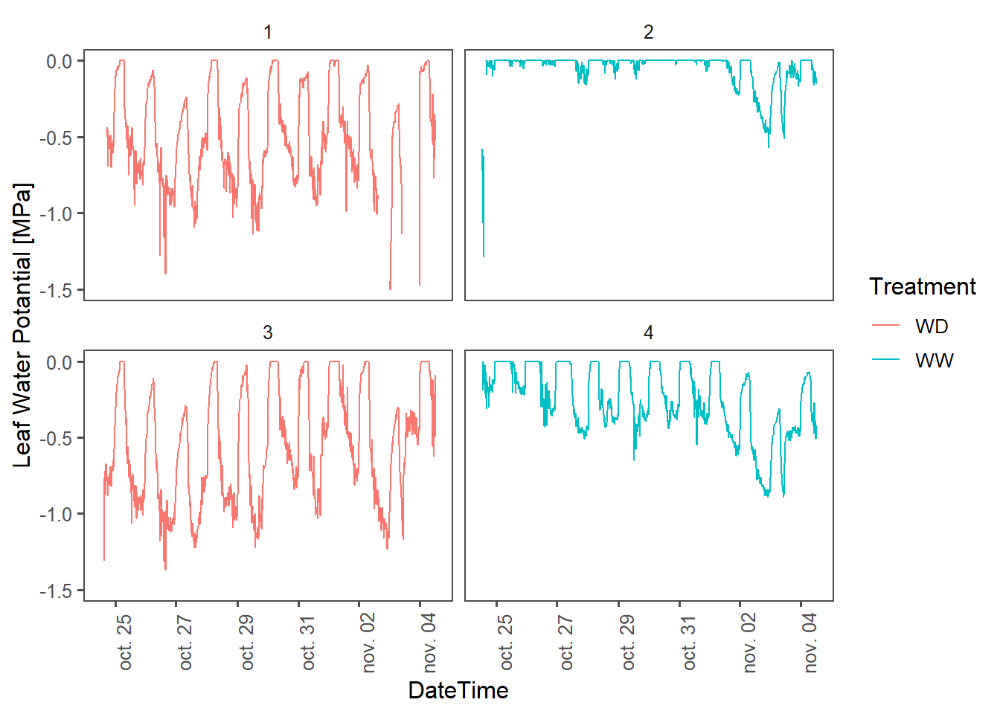
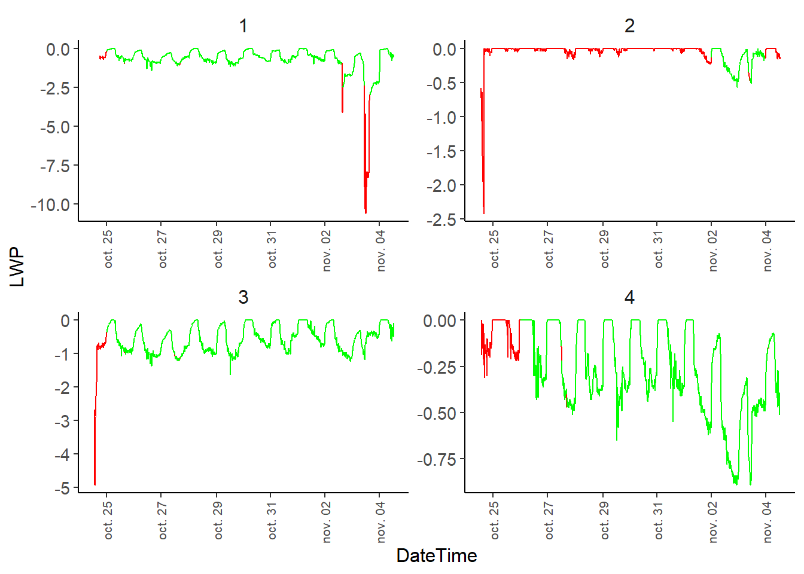
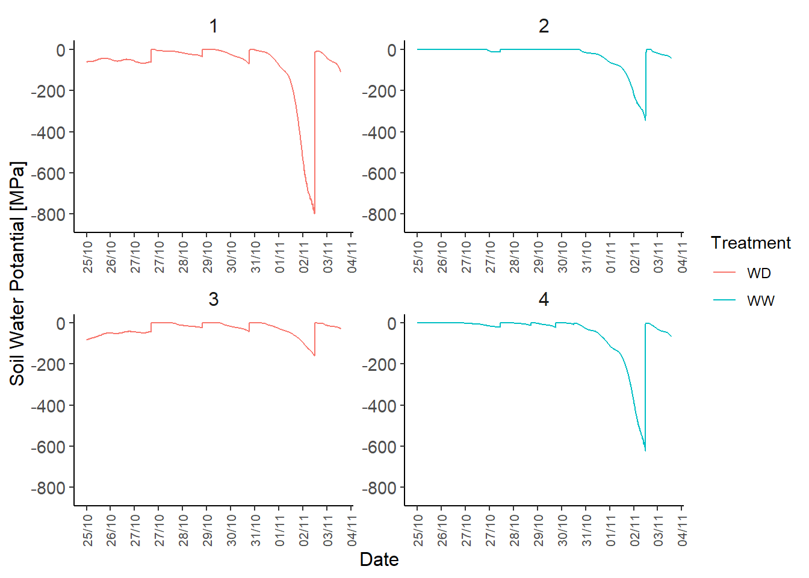
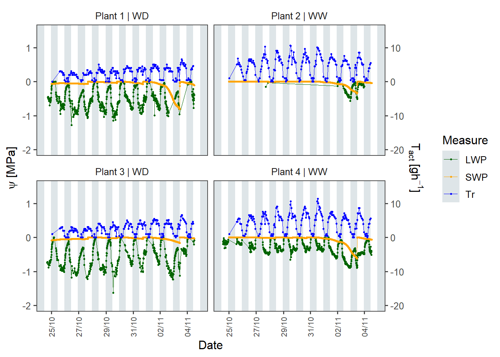
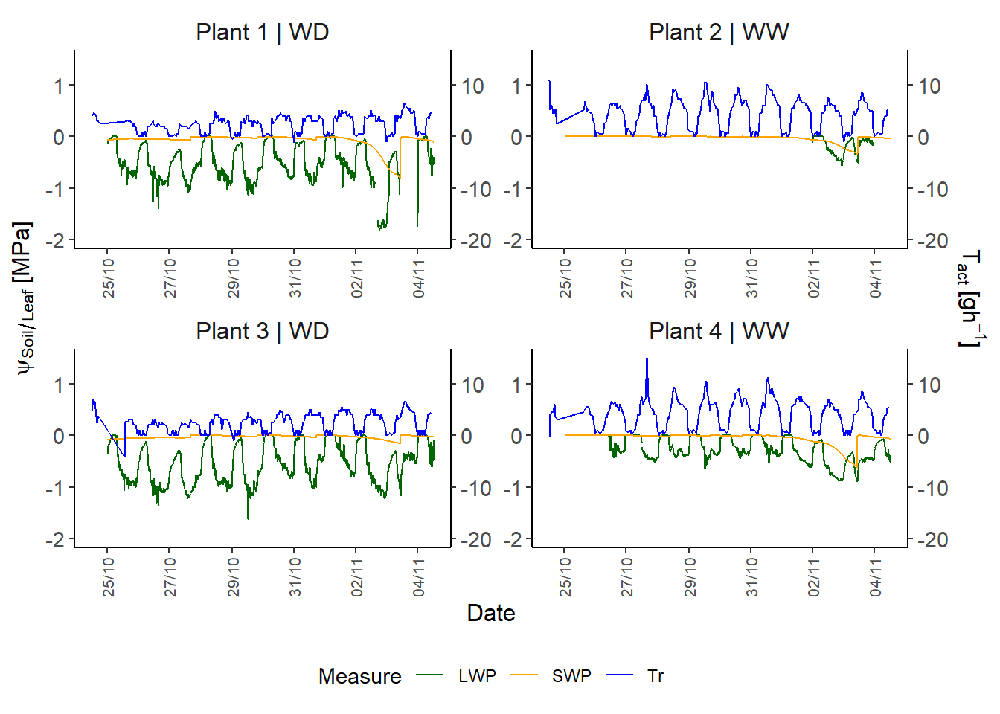

# rm(list=ls()) # clean workspace [comment when Rendering]
# setwd(dirname(rstudioapi::getActiveDocumentContext()$path)) # Set working directory to the current file [comment when Rendering]
# LOAD LIBRARIES
library(SciViews)
library(ggplot2)
library(pander)
library(dplyr)
library(tidyverse)
library(data.table)
library(anytime)
library(ggthemes)
# LOAD UTILITARY FUNCTIONS
source("src/Data_Preparation.R") # Contains functions to extract data from raw files
source("src/LWP_algorithm.R") # Contains the code of the LWP cleaning algorithm
# SET DIRECTORIES
data_path_clean <- paste0("data/clean/") # Set path to Clean folder
data_path_raw <- paste0("data/raw/") # Set path to row folder
plot_path <- paste0("plots/") # Set path to plot folder
path_LWP <- paste0(data_path_raw, "LWP/")
path_SWP <- paste0(data_path_raw, "SWP/")
path_weight <- paste0(data_path_raw, "weight/")DATA PROCESSING
INTRODUCTION & SET UP
This notebook presents simple codes to load, process and clean time-series data about leaf water potential ( \(LWP\) ) , soil water potential (\(SWP\)) and weight (\(W\)) for transpiration rate (\(T_r\)).
The repository contains the following folders :
data/ :
raw/ contains one folder per variable. Inside each subfolder are stored raw files directly collected from sensors. Typically, each file corresponds to one plant.
clean/ contains cleaned tables (in .csv format) for metadata and for each variable.
plots/ : contains plots and figures generated by this notebook.
src/ contains custom functions used to process, compile and clean the raw data.
Loading libraries and defining paths
my_theme <- theme_classic() +
theme(
text = element_text(size = 11),
axis.title = element_text(size = 12),
axis.text = element_text(size = 11),
axis.text.x = element_text(size = 8, angle = 90, hjust = 1, vjust = 0.5),
plot.title = element_text(size = 12, hjust = 0.5),
strip.background = element_rect(colour = "white", fill = "white"),
strip.text = element_text(size = 12), # Increase size and make bold
)Load Metadata
Load metadata about the experiment.
Here we designed a simple experiment as example :
4 plants (
Plant_IDcolumn)2 different treatments (
Treatmentcolumn) :well watered (WW)
water deficit (WD )
Leaf water potential (\(LWP\)) was recorded with psychrometers (
PSYcolumn). Raw files are stored indata/raw/LWP/.Soil water potential (\(SWP\)) was recorded with TEROS 21 (
Teroscolumn). Raw files are stored indata/raw/SWP/.Weight (\(W\)) was recorded with scales (
Scalecolumn). Raw files are stored indata/raw/weight/.
Plants_ID <- read.csv(paste0(data_path_clean, "Plants_ID.csv"))
pander(Plants_ID)| Plant_ID | PSY | Teros | Treatment | Scale |
|---|---|---|---|---|
| 1 | PSY1N909 | MP40 | WD | plant1 |
| 2 | PSY1N905 | MP01 | WW | plant2 |
| 3 | PSY1N903 | MP04 | WD | plant3 |
| 4 | PSY1N906 | MP68 | WW | plant4 |
1) LOAD LEAF WATER POTENTIAL DATA
Extract from raw files
\(LWP\) data from psychrometers are stored in separated .csv files.
We use the custom function load_LWP() to load and process each csv file in the provided path.
The result is a single table containing Date, Time, LWP value and the ID of plants.
The single file is written as LWP_raw.csv in the raw folder.
# Compile all PSY files into one dataframe
LWP_raw <- load_LWP(path = path_LWP)
# Change the PSY id by Plant_ID
LWP_raw <- left_join(LWP_raw,
Plants_ID[c("Plant_ID", "PSY")],
by = "PSY") %>%
select(-c("PSY"))
pander(head(LWP_raw))
# Write to raw folder
write.csv(x = LWP_raw, file = paste0(data_path_raw, "LWP_raw.csv"), row.names = F)Load compiled raw file
Once the raw files are compiled, we can simply load the processed csv file.
NB : each time we load the raw.csv files, we need to format correctly the DateTime column.
# Load from Raw folder
LWP_raw <- read.csv(paste0(data_path_raw, "LWP_raw.csv")) %>%
mutate(DateTime = anytime(DateTime)) %>%
mutate(DateTime = as.POSIXct(DateTime, format = "%Y-%m-%d %H:%M:%S"))Simple plot :
p1 <- ggplot(left_join(LWP_raw, Plants_ID, by = "Plant_ID")) +
# Display data as line
geom_line(aes(x = DateTime,
y = LWP,
color = Treatment,
group = Plant_ID)) +
# Split into facets per Plant_ID
facet_wrap(~Plant_ID,
scales = "free",
ncol = 2) +
# Setup x axis
scale_x_datetime(date_breaks = "1 day",
date_labels = "%d/%m",
name = "Date") +
# Setup y axis
ylab("Leaf Water Potantial [MPa]") +
ylim(-1.5, 0.5) +
# Add custom theme
my_theme
# ========================= #
# Show plot and save to file
p1
ggsave(filename = "LWP_raw.png", plot = p1, device = "png", path = plot_path, width = 9, height = 4)Apply cleaning algorithm and store to folder.
We see that data is messy, so we implemented an algorithm to clean LWP data. It consists of creating buffers per day, and for each buffer we run a bunch of tests to check if we want to keep the buffer of not.
check.naevaluates how many NAN are in the buffer. If there is more NAN than thenan.thproportion, the buffer is discarded.check.zeroevaluates how many zeros are in the buffer. If there is more zeros than thezero.thproportion, the buffer is discarded.check.cyclesevaluates if LWP at night is lesser than LWP at day. If the mean LWP at day is higher that the mean LWP at night multiplied bycycle.alpha, the buffer is discarded.check.slopeevaluates the mean slope of the buffer via a linear model. If the absolute value of the slope is higher thanslope.th, the buffer is discarded.check.levelevaluates the statistical mean of the buffer compared to the mean of the other buffers. If \(\mu_{LWP, i} < \mu_{LWP} - \alpha \cdot \sigma_{LWP}\) or \(\mu_{LWP, i} > \mu_{LWP} + \alpha \cdot \sigma_{LWP}\) (with \(\mu_{LWP}\) is the mean LWP for all buffers, \(\mu_{LWP,i}\) is the mean LWP of the ith buffer, \(\alpha\) is the unput multiplicator and \(\sigma_{LWP}\) is the standard deviation of LWP), the buffer is discarded.
Finally, the clean dataframe is written to storage.
LWP_clean <- clean.LWP(LWP_data = LWP_raw,
check.na = T,
check.zero = T,
check.cycles = T,
check.slope = F,
check.level = F,
nan.th = 0.5,
zero.th = 0.5,
cycle.alpha = 0.5,
slope.th = 0.000002,
level.alpha = 2)
LWP_clean <- LWP_clean[c("Date", "Time", "DateTime", "LWP", "Plant_ID")]
# Additionnal cleaning
LWP_clean <- LWP_clean %>%
filter(LWP > -3)
# Write to storage
write.csv(x = LWP_clean, file = paste0(data_path_clean, "LWP_clean.csv"), row.names = F)Load clean file
LWP_clean <- read.csv(paste0(data_path_clean, "LWP_clean.csv")) %>%
mutate(DateTime = anytime(DateTime)) %>%
mutate(DateTime = as.POSIXct(DateTime, format = "%Y-%m-%d %H:%M:%S"))
# Add NA so that there is gaps in geom_line
temp <- expand.grid(DateTime = unique(LWP_clean$DateTime),
Plant_ID = unique(LWP_clean$Plant_ID)
)
LWP_clean <- left_join(temp, LWP_clean, by = c("Plant_ID", "DateTime"))Simple plot :
LWP_plot <- ggplot(left_join(LWP_clean, Plants_ID, by = "Plant_ID")) +
# Display data as line
geom_line(aes(x = DateTime,
y = LWP,
color = Treatment,
group = Plant_ID)) +
# Split into facets per Plant_ID
facet_wrap(~Plant_ID,
scales = "free",
ncol = 2) +
# Setup x axis
scale_x_datetime(date_breaks = "1 day",
date_labels = "%d/%m",
name = "Date") +
# Setup y axis
ylab("Leaf Water Potantial [MPa]") +
ylim(-1.5, 0.5) +
# Add custom theme
my_theme
# ========================= #
# Show plot and save to file
LWP_plot
ggsave(filename = "LWP_clean.png", plot = LWP_plot, device = "png", path = plot_path, width = 9, height = 4)We can make a quick graph of the comparison between Raw and Clean LWP
p <- ggplot() +
geom_line(data = LWP_raw, aes(x = DateTime, y = LWP), color = "red") +
geom_line(data = LWP_clean, aes(x = DateTime, y = LWP), color = "green") +
# ylim(-3, 0.5) +
facet_wrap(~Plant_ID, scale = "free") +
my_theme
# ========================= #
# Show plot and save to file
p
ggsave(filename = "LWP_comparison.png",
plot = p, device = "png", path = plot_path, width = 9, height = 4)2) LOAD SOIL WATER POTENTIAL DATA
Extract from sensor files and compile into a single raw file
SWP data si stored as a unique .DAT file.
load_SWP function load the file and convert it to dataframe.
The pre-processed file can then be written to data/raw/ folder.
# Extract from DAT files
SWP_raw <- load_SWP(path_SWP = path_SWP)
# Replace Teros_ID by Plant_ID and set DateTime as POSIXct
SWP_raw <- left_join(SWP_raw, Plants_ID[c("Plant_ID", "Teros")], by = c("Teros_ID" = "Teros")) %>%
select(c("DateTime", "SWP", "Plant_ID")) %>%
mutate(DateTime = as.POSIXct(DateTime, format = "%d/%m/%Y %H:%M"))
# Write to disk
write.csv(x = SWP_raw, file = paste0(data_path_raw, "SWP_raw.csv"), row.names = F)Load raw file, clean it a bit and write to a clean file
Here we load the pre-processed SWP dataframe. Statistical or manual corrections can be done at will.
The final version of SWP data can then be written to data/clean/ folder.
# Load SWP_raw
SWP_raw <- na.omit(read.csv(paste0(data_path_raw, "SWP_raw.csv"))) %>%
mutate(DateTime = anytime(DateTime)) %>%
mutate(DateTime = as.POSIXct(DateTime, format = "%Y-%m-%d %H:%M:%S"))
# Filter data so DateTime match with LWP
SWP_clean <- SWP_raw %>%
filter(DateTime >= min(LWP_clean$DateTime) & DateTime <= max(LWP_clean$DateTime)) %>%
filter(DateTime > as.POSIXct("2024-10-25"))
# Write to disk
write.csv(x = SWP_clean, file = paste0(data_path_clean, "SWP_clean.csv"), row.names = F)Simple plot :
SWP_plot <- ggplot(left_join(SWP_clean, Plants_ID, by = "Plant_ID")) +
# Display data as line
geom_line(aes(x = DateTime,
y = SWP,
color = Treatment,
group = Plant_ID)) +
# Split into facets per Plant_ID
facet_wrap(~Plant_ID,
scales = "free",
ncol = 2) +
# Setup x axis
scale_x_datetime(date_breaks = "1 day",
date_labels = "%d/%m",
name = "Date") +
# Setup y axis
ylab("Soil Water Potantial [MPa]") +
ylim(-850, 0.5) +
# Add custom theme
my_theme
# =========================================== #
SWP_plot
ggsave(filename = "SWP_clean.png", plot = SWP_plot, device = "png", path = plot_path, width = 9, height = 4)3) EXTRACT WEIGHT DATA
Extract from sensor output files and compile into one single raw file
Weight data is stored as individual .csv files in data/raw/weight/ folder.
Similarly to LWP and SWP, the function load_W function extracts individual files and creates a single table.
The table is store in data/raw/folder.
# Load raw data
W_raw <- load_W(path = path_weight, skip = 1) %>%
inner_join(Plants_ID[c("Plant_ID", "Scale")], by = "Scale") %>%
mutate(Date = as.Date(Date, format = "%d/%m/%Y")) %>%
select(-c("Scale"))
# Write to disk
write.csv(x = W_raw, file = paste0(data_path_raw, "W_raw.csv"), row.names = F)Load raw file, clean a bit and write clean file
Here we load the pre-processed Weight table, apply corrections and filtering at will, then write cleaned data to data/clean/ folder.
# Load raw file
W_raw <- unique(read.csv(paste0(data_path_raw, "W_raw.csv"))) %>%
mutate(DateTime = anytime(DateTime)) %>%
mutate(DateTime = as.POSIXct(DateTime, format = "%Y-%m-%d %H:%M:%S"))
# Cleaning
W_clean <- W_raw %>%
filter(DateTime >= as.POSIXct("2024-10-24 11:00:00"))
# Write to disk
write.csv(x = W_clean, file = paste0(data_path_clean, "W_clean.csv"), row.names = F)Simple plot :
W_plot <- ggplot(W_clean %>% left_join(Plants_ID, by = "Plant_ID")) +
# Display data as line
geom_line(aes(x = DateTime,
y = Weight,
color = Treatment,
group = Plant_ID)) +
# Split into facets per Plant_ID
facet_wrap(~Plant_ID,
scales = "free",
ncol = 2) +
# Setup x axis
scale_x_datetime(date_breaks = "1 day",
date_labels = "%d/%m",
name = "Date") +
# Setup y axis
ylab("Weight [g]") +
# ylim(-1.5, 0.5) +
# Add custom theme
my_theme
W_plot
ggsave(filename = "W_clean.png", plot = W_plot, device = "png", path = plot_path, width = 9, height = 4)4) Compute Transpiration rate
The function compute_Tr computes transpiration rate \(T_r\) from Weight time series using the formula
\[ T_{r, t} [g \cdot h^{-1}] = (W_{t-1} - W_{t}) / \Delta t \]
Pre-processed transpiration rate data is stored in data/raw/ folder.
# Load clean Weight file
W_clean <- unique(read.csv(paste0(data_path_clean, "W_clean.csv"))) %>%
mutate(DateTime = anytime(DateTime)) %>%
mutate(DateTime = as.POSIXct(DateTime, format = "%Y-%m-%d %H:%M:%S"))
# Compute Tr using custom function
Tr_raw <- compute_Tr(W = W_clean, th = 20, DT.format = "%Y-%m-%d %H:%M:%S")
# Write to disk
write.csv(x = Tr_raw, file = paste0(data_path_raw, "Tr_raw.csv"), row.names = F)Load Tr raw from file
# Read Tr raw fil from folder
Tr_raw <- unique(read.csv(paste0(data_path_raw, "Tr_raw.csv"))) %>%
mutate(DateTime = anytime(DateTime)) %>%
mutate(DateTime = as.POSIXct(DateTime, format = "%Y-%m-%d %H:%M:%S"))Simple plot
Tr_plot <- ggplot(left_join(Tr_raw, Plants_ID, by = "Plant_ID")) +
# Display data as line
geom_line(aes(x = DateTime,
y = Tr,
color = Treatment,
group = Plant_ID)) +
# Split into facets per Plant_ID
facet_wrap(~Plant_ID,
scales = "free",
ncol = 2) +
# Setup x axis
scale_x_datetime(date_breaks = "1 day",
date_labels = "%d/%m",
name = "Date") +
# Setup y axis
ylab("Transpiration rate [g/h]") +
ylim(-1, 15) +
# Add custom theme
my_theme
Tr_plot
ggsave(filename = "Tr_raw.png",
plot = Tr_plot, device = "png", path = plot_path, width = 9, height = 4)Make one plot with the 3 variables
Create a gigantic file with every time series measurement.
For that, we create temporary table by gathering variables into one key column (Measure) and one value column (Value).
Then we bind them by row. For better visualization, we create a new attribute Plant_name that combine Plant_ID and Treatment.
LWP_temp <- LWP_clean[c("Plant_ID", "DateTime", "LWP")] %>%
gather(LWP, key = "Measure", value = "Value")
SWP_temp <- SWP_clean[c("Plant_ID", "DateTime", "SWP")] %>%
gather(SWP, key = "Measure", value = "Value") %>%
mutate(Value = Value/1000)
W_temp <- W_clean[c("Plant_ID", "DateTime", "Weight")] %>%
gather(Weight, key = "Measure", value = "Value") %>%
mutate(Value = Value/1500)
T_temp <- Tr_raw[c("Plant_ID", "DateTime", "Tr")] %>%
gather(Tr, key = "Measure", value = "Value") %>%
mutate(Value = Value/10)
TS_full <- rbind(LWP_temp, SWP_temp) %>%
rbind(T_temp) %>%
left_join(Plants_ID, by = "Plant_ID") %>%
mutate(Plant_name = paste0("Plant ", Plant_ID, " | ", Treatment))Generate the plot
full_plot <- ggplot(TS_full) +
# Display the data as a line
geom_line(aes(x = DateTime, y = Value, color = Measure)) +
# Choose manual colors
scale_color_manual(values = c("darkgreen", "orange", "blue")) +
# Set x limits and define the format of breaks
scale_x_datetime(# date_breaks = "1 day",
date_labels = "%d/%m",
name = "Date") +
# Set y limits and add a secondary axis
scale_y_continuous(limits = c(-2, 1.5),
bquote(expr = psi[Soil/Leaf]~"[MPa]"),
sec.axis = sec_axis(~.*10, name = bquote(T[act]~"["*gh^-1*"]"))
) +
# Split screen by Plant_name
facet_wrap(~Plant_name,
scales = "free",
ncol = 2) +
# Premade theme
my_theme +
# Change some specificities of the theme
theme(legend.position = "bottom")
full_plotWarning: Removed 1 row containing missing values or values outside the scale range
(`geom_line()`).
ggsave(filename = "Full_plot.svg", plot = full_plot, device = "svg", path = plot_path, width = 7, height = 5)Warning: Removed 1 row containing missing values or values outside the scale range
(`geom_line()`).ggsave(filename = "Full_plot.png", plot = full_plot, device = "png", path = plot_path, width = 7, height = 5)Warning: Removed 1 row containing missing values or values outside the scale range
(`geom_line()`).